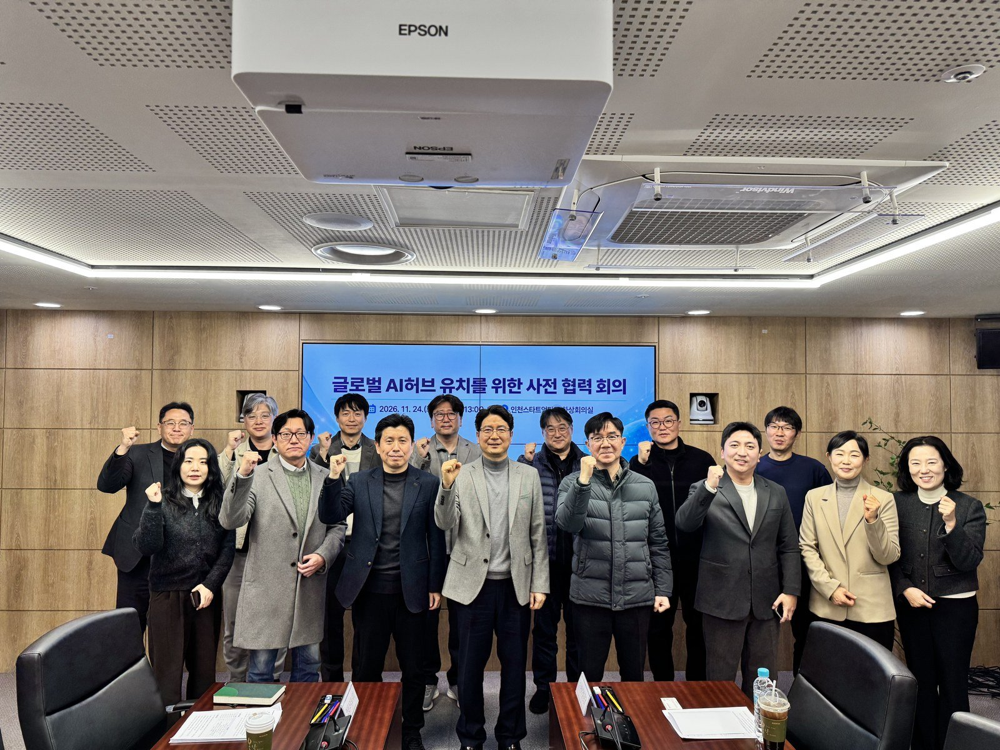
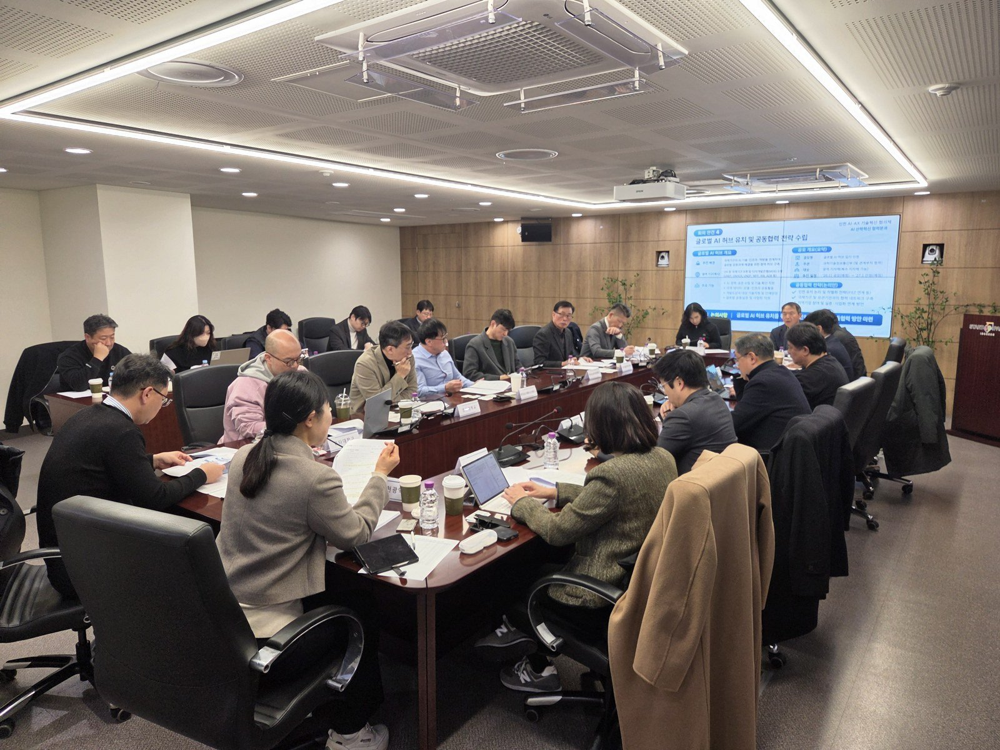

인천시, 글로벌 AI 허브 유치 협의체 12월 출범
기업 12곳·대학 13곳 참여, 공항·항만 현장 실증 연계
정부 2027년 개소 목표, 입지 후보지 공모 앞둬
AI경제저널=김갑봉 기자 | 인천시가 정부 글로벌 인공지능(AI) 허브를 유치하려고 기업·대학·공공기관·연구기관을 분과 4개로 묶었다. 참여 기관은 AI 기업 12곳, 대학 13곳, 인천국제공항공사·인천항만공사 같은 공공기관, 연구·표준·산업 기관이다. 허브는 2027년 개소가 목표다.
시는 24일과 25일 공공실증·기술확산 분과 회의를 열어 분과 4개 사전회의를 모두 마쳤다. 협의체는 12월 공식 출범한다.
글로벌 AI 허브는 정부가 국내에 만들려는 국제기구 간 AI 협력 거점이다. 국제기구 상주인력이 중심인 국제 캠퍼스형 협력 플랫폼으로, 기후·보건·식량·일자리 같은 글로벌 난제를 풀 AI 공동사업과 실증, 정책·표준 논의를 맡는다.
협의체 이름은 '인천 인공지능(AI)·인공지능 전환(AX) 기술혁신 협의체'다. 24일과 25일 회의는 인천스타트업파크에서 열렸고, 두 분과는 2027년 분과 운영 방향과 성과 창출 방안을 논의했다. 분과 4개 회의는 인천시와 인천테크노파크가 함께 마련했다.

기술기업·산학·공공실증·기술확산, 분과 4개 역할
13일 회의를 연 AI 기술기업 협력분과에는 관내 AI 기술기업 12곳과 관계기관이 참여했다. 참석자들은 분과 운영 방향과 분과 간 공동사업 발굴, 허브 유치에서 분과가 맡을 역할을 논의했다.
20일 회의를 연 산학혁신 협력분과에는 지역 대학 13곳이 참여했다. 참여 대학은 기업과 함께 AI 기술을 개발하고 교류하며, 기업이 원하는 전문인력을 기르고, 학생 취·창업을 잇고, 대학 안에서 AI 해법을 실증할 계획이다.

공공실증 협력분과는 인천국제공항공사, 인천항만공사 등 관내 공공기관이 맡은 공항·항만·물류 현장을 AI 해법 실증과 잇는다. 분과는 글로벌 난제를 풀 AI 해법을 현장에서 검증할 실증 환경을 만들고 수요를 찾는다.
기술확산 협력분과에는 한국전자기술연구원, 한국정보통신기술협회, 한국인공지능협회, 인천상공회의소 등 연구·표준·산업 기관이 참여한다. 이 분과는 실증을 거친 기술이 표준화·사업화·투자 연계로 지역 기업과 해외 시장에 퍼지게 돕는다.
시는 협의체가 출범하면 운영위원회를 해마다 두 번, 분과별 정례회의를 분기마다 한 번 열 계획이다. 김상길 시 미래산업본부장은 "협의체 출범 이후에도 분과별 공동 과제를 신속히 구체화해 인천만의 경쟁력을 갖춘 유치 전략을 완성해 나가겠다"고 말했다.
5월 비전 선포, 국제기구 9곳·다자개발은행 5곳 참여
김민석 국무총리와 관계부처는 5월 21일 글로벌 AI 허브 비전 선포식을 열었다. 국제이주기구(IOM), 국제전기통신연합(ITU), 국제노동기구(ILO), 유엔개발계획(UNDP), 세계식량계획(WFP), 세계보건기구(WHO), 유엔환경계획(UNEP), 유엔아동기금(UNICEF), 유엔난민기구(UNHCR) 등 국제기구 9곳이 참여했다.
세계은행(WB), 아시아개발은행(ADB), 미주개발은행(IDB), 유럽부흥개발은행(EBRD), 중미경제통합은행(CABEI) 등 다자개발은행 5곳도 함께했다.
구윤철 경제부총리 겸 재정경제부장관은 이날 이들 은행이 한국에 세울 AI 특화센터와 허브를 잇는 방안을 발표했다. 세계은행은 2025년 12월 인천 송도에 AI·디지털 지식센터를 먼저 열었다.
허브는 주요 국제기구에 흩어진 AI 기능을 한데 모으고 다자개발은행을 거쳐 성과를 퍼뜨리는 거점이다. 허브가 문을 열면 국제기구 파견 인력이 상주하며 국내외 산·학·연과 함께 일한다.
허브는 개발도상국 AI 도입을 돕는 정책·표준 개발, 데이터·모델·실증사례 공유, AI 해법 개발·확산, 교육·훈련을 맡는다.
10월 예정이던 후보지 공모, 아직 공고 전
정부는 2027년 허브 개소를 목표로 잡았다. 국무총리가 위원장인 글로벌 AI 허브 추진위원회는 9월 21일 입지 선정 기본계획을 논의했다.
추진위원회 지원단은 9월 30일, 평가기준과 공모지침을 보완해 10월 중 후보지 공모를 공고하고, 평가와 현장실사를 거쳐 최종 입지를 정하겠다고 밝혔다. 11월 26일 현재 과학기술정보통신부 보도자료 게시판과 사업공고 게시판에 후보지 공모 공고는 올라오지 않았다(연구소 확인).
시는 12월 협의체 출범 뒤 정부 공모에 본격 대응할 방침이다.
참고문헌
- 「인천시, 글로벌 인공지능(AI) 허브 유치 밑그림 그렸다」, 인천광역시 AI혁신과 보도자료, 2026.11.25., https://www.incheon.go.kr/IC010205/view?repSeq=DOM_0000000016089095
- 「인천시, 지역 13개 대학과 '글로벌 인공지능(AI) 허브' 유치 전략 모색」, 인천광역시 AI혁신과 보도자료, 2026.11.20., https://www.incheon.go.kr/IC010205/view?repSeq=DOM_0000000016054113
- 「인천시, 지역 인공지능(AI) 기업과 '글로벌 인공지능(AI) 허브' 유치 전략 모색」, 인천광역시 AI혁신과 보도자료, 2026.11.15., https://www.incheon.go.kr/IC010205/view?repSeq=DOM_0000000015974650
- 「「국제 인공지능 거점(글로벌 AI 허브)」 입지 선정 공청회 개최」, 과학기술정보통신부 글로벌 AI 허브 추진위원회 지원단 보도자료, 2026.9.30., https://www.msit.go.kr/bbs/view.do?sCode=user&bbsSeqNo=94&nttSeqNo=3187827
- 「「글로벌 AI 허브」 비전 선포식 개최」, 재정경제부 보도자료(첨부 관계부처 합동 보도자료 「"AI로 전 인류의 난제를 해결"… 「글로벌 AI 허브」 비전 선포」), 2026.5.21., https://www.korea.kr/briefing/pressReleaseView.do?newsId=156763005
[사진 출처]
- 사진1 인천광역시 AI혁신과 보도자료 「인천시, 글로벌 인공지능(AI) 허브 유치 밑그림 그렸다」 첨부 사진, 2026.11.25., https://www.incheon.go.kr/IC010205/view?repSeq=DOM_0000000016089095 (공공누리 제1유형)
- 사진2 인천광역시 AI혁신과 보도자료 「인천시, 지역 13개 대학과 '글로벌 인공지능(AI) 허브' 유치 전략 모색」 첨부 사진, 2026.11.20., https://www.incheon.go.kr/IC010205/view?repSeq=DOM_0000000016054113 (공공누리 제1유형)
※ 이 기사는 인공지능기자 위민아이(Wemin_AI)와 협력해 작성했습니다.
관련기사
- 짓는 도시 아닌 운영하는 도시… 인천의 UN AI 허브 승부수
- UN AI 허브는 거대 데이터센터 아닌 'AI규범 UN기구'… 국제기구 클러스터 인천이 최적지
- 박찬대가 건 송도 UN AI 허브, GCF 12년이 받친다
- 인천시 제7차 지능정보화 기본계획 심의, 다섯 전략 모두 AI
저작권자 © AI경제저널 무단전재 및 재배포, AI학습 및 활용 금지